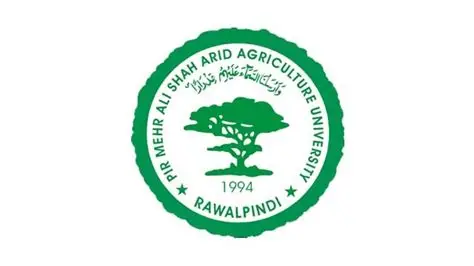

Arid University, officially known as Arid Agriculture University Rawalpindi (AAUR), is a prominent public sector university in Pakistan. It is located in Rawalpindi, Punjab, and is recognized for its focus on agriculture, water resources, and environmental sciences. The university was established to promote research and education in arid zones and water management. ARID University offers undergraduate, graduate, and postgraduate programs in fields like agriculture, engineering, business, and social sciences. It is particularly famous for its research in dryland agriculture and irrigation techniques. The campus is equipped with modern laboratories, research centers, and experimental farms for practical learning. Faculty members are highly qualified and actively involved in national and international research projects. The university promotes innovation, sustainability, and community engagement in its academic programs. Students get opportunities for internships, workshops, and field visits to enhance practical knowledge. ARID University also collaborates with foreign universities and research institutes for academic exchange programs. The library houses a vast collection of books, journals, and digital resources for students and researchers. Sports and extracurricular activities are encouraged to ensure overall development of students. Scholarships and financial support are available for meritorious and needy students. The university emphasizes research in climate change, forestry, and desertification. ARID University has a mission to produce skilled professionals in agriculture and allied sciences. It organizes seminars, conferences, and training programs regularly for knowledge sharing. The alumni of ARID University are serving in government, private sector, and research organizations nationally and internationally. The university promotes a friendly and inclusive campus environment for all students. Its strategic location in Rawalpindi provides easy access to urban facilities and research collaborations. Overall, Arid Agriculture University Rawalpindi is a center of excellence for education, research, and sustainable development in arid regions.
Image is placed on right side
